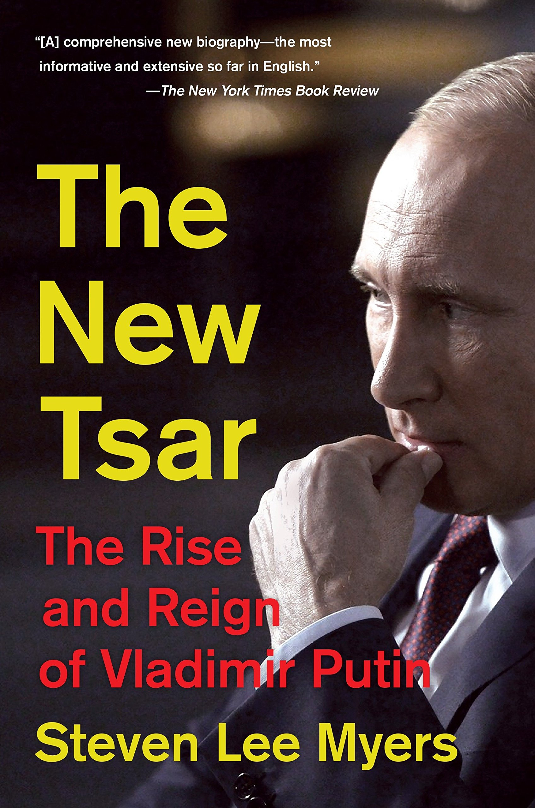

Vladimir Putin will be president for life. A public referendum to reform the constitution of Russia, held from the 25 th of June to the 1 st of July this year, extended the term limits of the Russian President–allowing Putin to remain in power for two more 6-year terms, if re-elected (and well, taking into consideration the accidental deaths of his political opponents, re-election doesn’t sound all that difficult for Putin). But no matter how simple the previous sentence may sound, its repercussions are grave: The ex-KGB officer is about to become the longest serving Russian Head of State since authoritarian dictator Joseph Stalin. To comprehend who Putin really is, let us take a look into his meteoric rise to power.

Putin was born in Soviet Russia and grew up as a rather rebellious teenager; He played the guitar
and listened to contraband Beatles songs. However, his aims were clear from the very beginning.
To pursue his dream of becoming a KGB secret agent, he joined the secret police force in 1975
and was posted in Dresden, East Germany during the calamitous period of the collapse of the
Berlin Wall, but only as an officer. Sensing a dissolution of the Union on the way, he returned to
Leningrad in 1990 and is claimed to have resigned with the rank of Lieutenant Colonel on the
20 th of August 1991, the second day of the attempted coup d'état against the then Soviet President
Mikhail Gorbachev. Putin has been quoted as saying “As soon as the coup began, I immediately
decided which side I was on.”
During his time in Leningrad, he worked in the International Affairs department of the Leningrad
State University, where he rekindled his friendship with a former professor of his–Anatoly
Sobchak–who would go on to be the Mayor of St Petersburg. Putin’s entry into politics was in
fact through Professor Anatoly, who appointed him as the deputy mayor of the city during his
mayoral tenure. After serving 5 years in that office, ā Anatoly lost the ticket to run for mayor
again and so in June of 1996, Putin made his way to Moscow. Just within a year of being in
Moscow, he fetched a place in the good books of the first Russian President, Boris Yeltsin-the
first domino in Putin's Machiavellian design.
From 1997 to 1998, Yeltsin appointed Putin as the Chief of the Presidential Staff and the
Director of the Federal Security Services (FSB), the successor to the KGB. Putin’s first
premiership came to him on the 9 th of August 1999, when he was appointed as one of the three
deputy Prime Ministers. He was then appointed acting Prime Minister of the Government of the
Russian Federation by President Yeltsin who announced that he wanted to see Putin as his
successor. Putin also agreed to run for the presidency—and it might be hard to digest, but all of it
happened on the same day (yeah, quite a long day for him). Within a week, the State Duma
approved his appointment, making him the fifth Russian PM in less than 18 months.
Yeltsin was a rather embarrassing President to have. He was a frequently ill, unstable alcoholic
who would often show up to diplomatic events in a drunken state (although it is said he allegedly
suffered from an “unspecified neurological disorder” that affected his sense of balance).
However, most importantly, he was caught in a massive corruption scandal which could end with
him and his family spending their lives behind bars. So, Yeltsin did what he thought best, and
struck a deal with a fairly unknown young politician–bartering his power and authority for his
freedom. President Boris Yeltsin unexpectedly resigned on the eve of the millennia, 31 st of
December 1999, making Putin the Acting President of the Russian Federation. The first
Presidential Decree that Putin signed that day was titled "On guarantees for the former president
of the Russian Federation and members of his family" which ensured that "corruption charges
against the outgoing President and his relatives" would not be pursued. While all of us do smell a
quid pro quo, the Russian people didn't and Putin was officially elected and sworn in as the
second President of the Russian Federation in May 2000, marking the beginning of his
premiership.
An authoritarian leader from day one, Putin started off his Presidency by gauging the loyalty of
the Russian Oligarchs, the millionaires and billionaires who had, in a way, gotten Putin into
office. Mikhail Khodorkovsky, at one point the richest man in Russia, was one such oligarch
who raised concern about Putin’s corrupt government and had a fall-out with the President
during a televised meeting at the Kremlin. In 2003 he was arrested by Russian authorities,
charged with fraud and tax evasion, sentenced to ten years in prison and then exiled to the UK in
2013. Boris Berezovsky was another self-styled tycoon who criticized the Putin Government and
commented on the Kremlin’s involvement in the orchestrated assassination of Alexander
Litvinenko, a former Russian intelligence officer and whistle-blower poisoned to death in 2009.
Boris was found “hanging under mysterious circumstances” in his apartment in the UK, where
he was in a self-imposed exile.
After serving two consecutive terms in the Presidential office, Putin ran for Prime Minister once
again in 2008, as the constitution didn’t allow him a longer duration of Presidency. During this
period, Dmitry Medvedev, a trusted associate of Putin took office as President and amended the
constitution to extend the Presidential term from 4 years to 6 years. This effectively meant that a
president only had to get re-elected once, to serve the equivalent of 3 terms-12 years. Of course,
it was no surprise when Putin ran for president again in 2012 and won by landslide margins due
to the lack of significant opposition (that perhaps, goes without saying)
Standing in 2020, Putin seems to be the epitome of the saying, “If you can't adapt yourself to the
world, make the world adapt itself to you,” for he has once again amended the constitution
simply to clear his way towards a complete authoritarian regime, one where his presidency lasts
till the year 2036.
But whenever one talks of the referendum, there are two things to be kept in mind:
First, Putin didn’t actually need to call for this vote, especially given the fact that it had already
been ratified by the national parliament in Moscow and regional legislatures across the country,
but he still went ahead and did it simply to show that the people of Russia support him. In reality
it was credible evidence needed for Putin to counter Western “conspiracies” and allegations.
Secondly, the referendum also brought about many other changes including enshrining
‘protection of pensions, family values, animals, the Russian language and the memory of
Russians killed in World War II’. These were the key slogans highlighted in the campaigns for
the referendum, while the core change allowing for 4 consecutive presidential runs was simply
overlooked. There was a simple yes/no vote on the referendum which meant voting “no” would
imply that you were an anti-nationalist who dishonoured the contribution of the Russian soldiers
killed-in-action fighting Nazis, and didn’t value the traditions Russian society is built on. So, if
you look at it this way, they really didn’t have much of a choice.
From the very looks of it, it is evident. In Russia’s democratic simulacrum, you can vote how
you like–the result is always Putin. Putin provides the people of Russia with some sense of
stability in exchange for their freedom. It is maybe an understandable exchange given all that
Russia has been through, but the trouble with a strong-man like Putin is this: he’s stable until
suddenly, one day, he’s not. What happens then? Well, we don’t know yet.